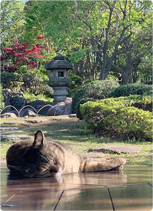
猫好きです。呑気な感じがいいんですよね。
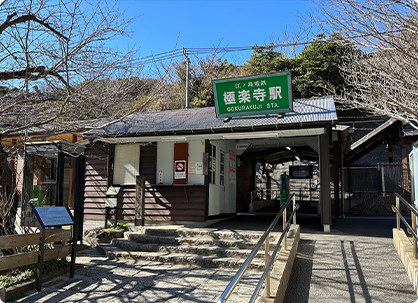
「海街diary」の聖地です。５巻の群青の表紙の場所もすごく好きなんですけど、極楽寺の駅も好きなんですよね。
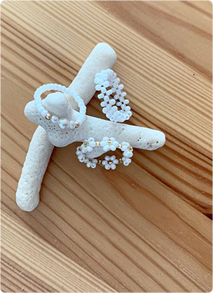
アクセサリーたまに作ったりします。細かい作業が結構好きだったりします。
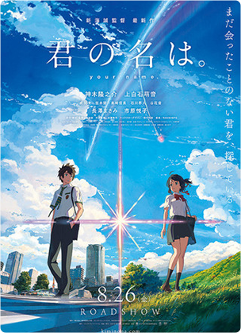
君の名はを観るために何回映画館に行ったことか。曲がRADWIMPSで、瀧くんが神木隆之介だなんて、私のためにできたんじゃないかという映画です。今でもNetflixで観ます。
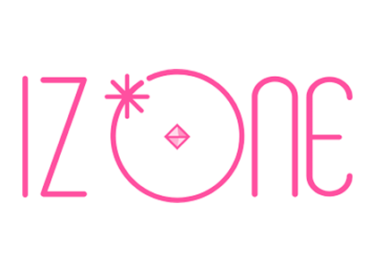
IZ*ONE再結成してほしい。ユリペンです。IZ*ONEの曲もビジュアルも全てが好きです。コロナ禍で一回も生で観ることなく終わってしまったのでどうにか再結成して観に行かせて頂きたい。
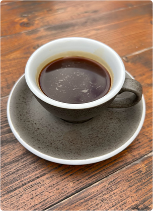
コーヒーが本当に好きなんですよ。休みの日は「コーヒーが飲めるぞ」と嬉しくなります。でも最近飲みすぎると体調悪苦なったりするので悲しいです。
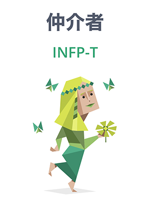
mbtiの結果です。質問長くて挫折するかと思いました。でも「確かに」とはあまりならなかったです。
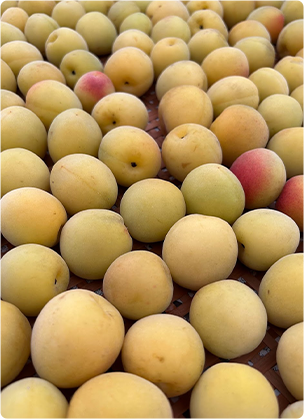
梅も好きです。毎年夏前になると、家の中に梅の香りが漂って幸せな気持ちになります。
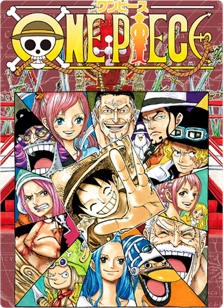
ワンピース大好きです。推しはサボです。考察とか観てると奥が深くて泥沼です。
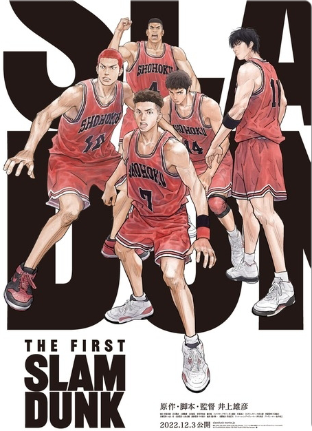
接骨院で一気読みしました。絶対全部読み終わりたくて、電気治療中の10分で２巻のペースで読んでいました。映画も観ましたが、やっぱりバスケってスラムダンクっていいなあと思いました。
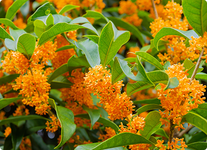
誕生花は金木犀です。近所に何箇所か金木犀スポットがあって、金木犀の香りがしてくると「あーもうすぐ誕生日だなー」と思います。
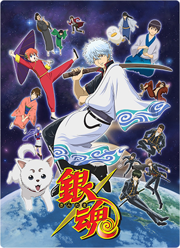
銀魂はアニメで２周しました。ふとした時に観たくなっちゃうんですよね。面白い上になんか妙に芯をついてくる感じが好きです。
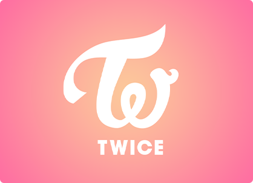
Kpopの中でも一番好きです。ジョンヨンペンです。高校生あたりからの私の人生はtwiceなしでは語れません。
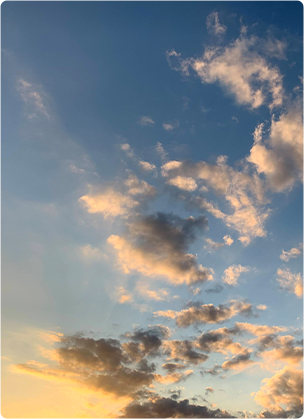
空の写真を結構撮ったりします。朝とか夕方とかのグラデーションが好きです。
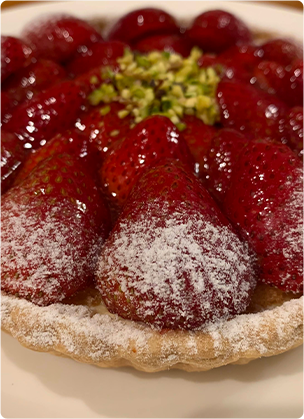
好きなケーキはフルーツタルトです。キルフェボンの苺タルトはいつ食べても期待を裏切らないですよね。
韓国ドラマは一気に観るか、途中で観なくなるかです。特に好きなのが「トボンスン」です。パクボヨンとパクヒョンシクが可愛すぎて、4周くらいしてます。U-NEXTでしか観れないのが本当に悲しいです。